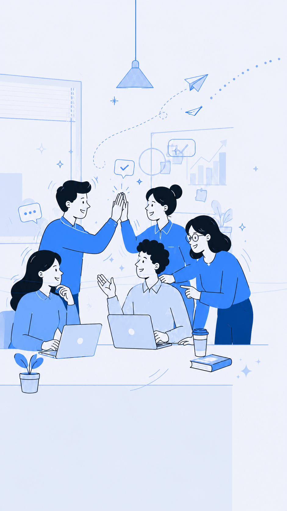

Culture starts with listening
듣고, 연결하고, 함께 실행합니다.
Welcome to
Lina Culture Platform
승인된 구성원만 조직문화 운영 화면과 내부 데이터에 접속할 수 있습니다.
접속 정보를 확인하고 있습니다.네트워크 상태에 따라 잠시 시간이 걸릴 수 있습니다.
처음 접속한다면 회원가입 후 관리자의 승인을 기다려 주세요. 비밀번호는 Firebase 인증에만 보관되며 플랫폼 데이터에는 저장되지 않습니다.